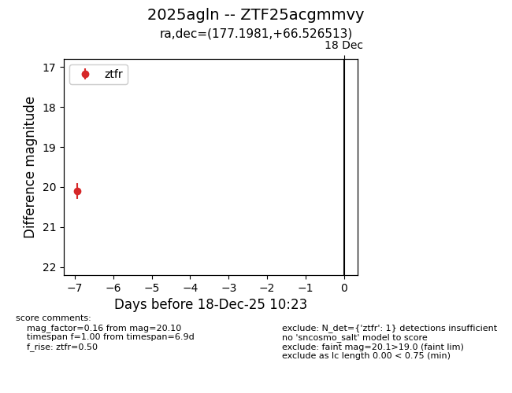
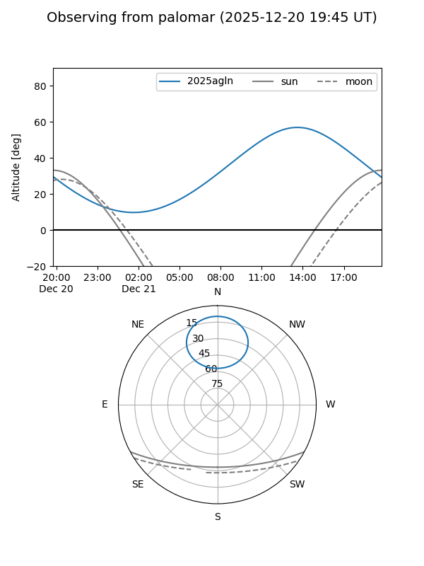

2025agln
Target 2025agln at 2025-12-31 16:59
Aliases and brokers:
FINK:
Lasair:
ALeRCE:
TNS:
YSE:
alt names
ZTF25acgmmvy (ztf,fink_ztf)
2025agln (tns,yse)
Coordinates:
equatorial (ra, dec) = 177.1981,+66.52651
equatorial (HMS+DMS) = 11:48:47.54,+66:31:35.45
galactic (l, b) = (132.4481,+49.42819)
Flags:
Photometry:
last ztfr=20.36
2 ztfr detections
Lightcurve

Visibility


Additional plots